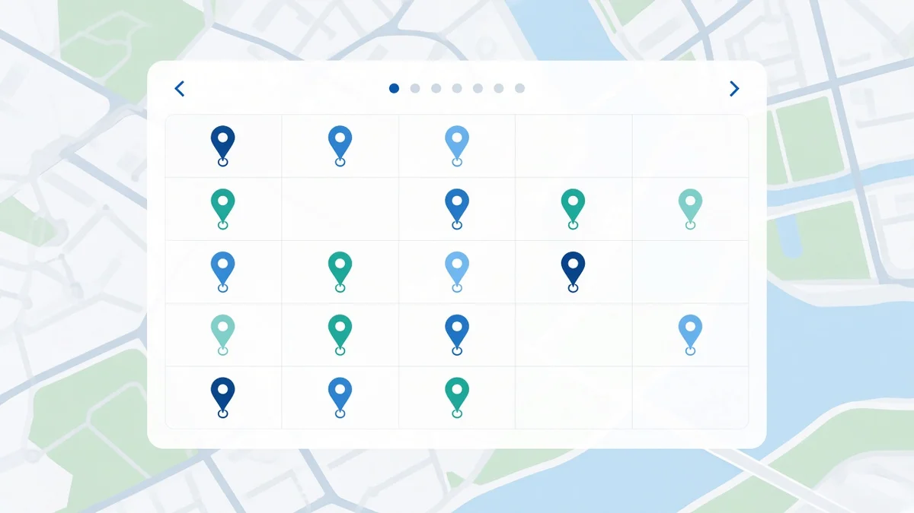

How often should you check your Google Maps rankings?

Short answer: check on a fixed schedule with the same grid, not every time you open your phone. For most local businesses, a comparable scan every one to four weeks shows real movement. Daily checks at one address mostly show noise. Google itself notes that results can change between searches hours or even minutes apart.
Why daily self checks mislead
Google's Search help says results can vary between searches a few hours or even minutes apart as new content and ranking updates roll out, and that location, device type, language and personalization can all change what you see (Why your Google Search results differ from others). Combined with searching from beside your own listing, a daily phone check is a poor trend line.
| Cadence | When it fits | Watch out for |
|---|---|---|
| Daily | Short crisis windows (suspension, verification, sudden drop investigation) | Noise; hard to tell signal from luck |
| Weekly | Active profile work or client campaigns | Keep grid and keywords identical |
| Every 2 to 4 weeks | Steady local businesses watching coverage | Still compare like for like |
| Quarterly only | Very stable listings with no changes | You may miss a slow competitor push |
What to keep identical between checks
- Keywords: the phrases customers type, not your brand name alone.
- Points: the same centre, radius and grid size. Use the grid scan planner and grid size guide before you lock a layout.
- Settings: same language and device type so the series is comparable.
- Reading: look at coverage and top 3 share over weeks, not one tile colour. See how to read a Maps rank grid.
When to scan more often
Increase cadence for a few weeks after you change primary categories, move address, recover from a suspension, launch a big review request, or open a new location. If rankings look worse across many points, start with why a Business Profile ranking drops and why a business is not showing. Agencies writing client updates can follow how to report Maps rankings to clients.
Same points, every scan
RankFootprint reuses your grid so weekly or monthly scans stay comparable across your service area. Scan results come from SerpApi, a third party API that retrieves Google Maps search results on our behalf. Results reflect what Google showed at the time of the scan. We do not guarantee any ranking.
FAQ
How often should I check my Google Maps ranking?
For most local businesses, a full grid every one to four weeks is enough. Check more often after big profile changes or during a client campaign.
Is it useful to check Google Maps rankings every day?
Usually not. Google notes results can vary hours or minutes apart. Compare the same grid over several weeks instead of one address every morning.
Should agencies check Maps rankings weekly?
Yes when you are actively changing a profile or reporting a campaign. Keep keywords and grid settings identical. See our agency reporting guide.
What should stay the same between Maps rank checks?
Same keywords, same fixed points, same language and device type. Changing the layout between scans breaks the trend.
Related: What is grid rank tracking? · How to check ranking in different areas · Why rankings change across town · Do Google reviews affect Maps ranking?